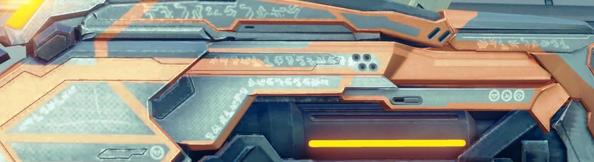

So, some people I know seem to have ‘cracked’ Forerunner translation for the glyphs we see in Halo 4 now that we actually have a complete alphabet. We know 343 has this sort of thing - along with a Sangheili dictionary - but has been drip-feeding us for years.
Across all the games, there are 6 established Forerunner writing systems. There’s the rectangle type in Halo 3, the hexagon type in Halo Wars/Spartan Assault/Waypoint Terminals, circular type (this appears to be Digon, the dialect of the Warrior-Servants), and then there’s hieroglyphic scripture, planet, and line types (we don’t have anything concrete on those last 3).
We can now see an extra level of detail in some of Halo 4′s marketing materials, actual levels in the campaign, right down to details on weapon skins.
The Eld with all the glyps we see in the second mission that Cortana translates? It’s all on there:
The same inscription is on one of the Suppressor skins from Halo 4′s multiplayer.

The Didact poster also says “TRESPASS IS DOOM, RECLAIMER”.
Obviously alluding to the warning that Librarian and Endurance put out when they stick the Ur-Didact in a Cryptum.
Various terminals say the worlds “shield”, “power”, “on”, and “off” on them and the way you are animated to activate them actually lines up with the translation.
And the slipspace artefact that Halsey and Glassman fiddle about with in Spartan Ops says “TECHLINK ESTABLISHED, FORERUNNER” when interacted with.
This is pretty damn amazing, we can now effectively write in Digon.
Props to whoever is behind all this astonishing level of detail and those who have spent years hanging on to every piece of canon material for translations.